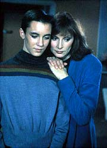
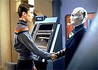
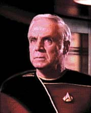
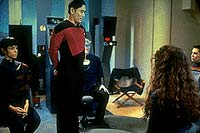

|
MANCHETE
DO EPISDIO
Roteiro
aposta em continuidade ao fazer
meno a possvel conspirao na Frota
Episdio
anterior | Prximo
episdio
Sinopse:
Data Estelar: 41461.2.
A Enterprise vai a Relva VII para que Wesley Crusher realize os
testes para ser admitido na Academia da Frota Estelar. L, a nave
recebe a visita do almirante Gragory Quinn, um velho amigo de Picard.
Ele leva com ele o tenente-comandante Remmick, um oficial chamado a
realizar uma extensa investigao na Enterprise para investigar a
competncia de seu capito.
 Em
meio investigao, um jovem chamado Jake Kurland, decepcionado
por no ter se qualificado para prestar o teste para entrada na
Academia, rouba uma nave auxiliar a foge da Enteprise. A nave sofre
uma pane e o rapaz comea a se desesperar, j que o veculo est
indo, fora de controle, diretamente para a superfcie de Relva.
Picard consegue acalm-lo e dar instrues para que ele consiga
voltar nave.
Aps pesquisa exaustiva, Remmick relata a Quinn que ele no
conseguiu encontrar nada de errado com a Enterprise ou seu capito.
O almirante ento revela a Picard que a investigao era uma
forma de ter certeza de que o capito estava apto a assumir o posto
de comandante da Academia da Frota Estelar, promovido patente de
almirante. Quinn conta ao capito que teme por uma conspirao na
Federao, e precisa se assegurar de que os oficiais em
postos-chave sejam totalmente confiveis.
 Enquanto
isso, Wesley acaba no conseguindo obter a nica vaga em disputa
para a Academia. Apesar de estar desapontado, o jovem animado por
Picard, que revela tambm no ter conseguido entrar na Academia em
sua primeira tentativa. Ele conta que no aceitar a oferta de
Quinn e continuar como capito da Enterprise.
Comentrios:
"Coming of Age" trabalha pela primeira vez
com um importante conceito para sries de televiso: continuidade.
Alinhando duas histrias paralelas, o episdio faz mais que
desenrolar seu enredo --ele comea a "preparar o terreno"
para uma histria que viria mais tarde.
 Levando
isso em conta, podemos dizer que, embora no seja um dos grandes
episdio da temporada, trata-se de um inteligente, do ponto de
vista de produo. O desenrolar das suspeitas do almirante Quinn
sobre uma conspirao na Federao s seriam esclarecidas e
utilizadas devidamente no penltimo episdio da temporada, que tem
o sugestivo ttulo "Conspiracy".
A histria envolvendo Wesley Crusher em sua tentativa de conquistar
uma vaga na Academia da Frota quase to chata quanto o filho de
Beverly. Nessa linha do episdio praticamente nada se salva
--exceto talvez pela viso do primeiro Benzite de Jornada nas
Estrelas, o simptico Mordock.
De resto, no s os testes a que Wesley e seus colegas so
submetidos como o famoso "psicoteste" parecem ser da mais
absoluta estupidez. Um exemplo de como as coisas poderiam ter mais
dinamismo pode ser encontrado no pequeno joguinho de perguntas e
respostas com Spock em "Jornada nas Estrelas IV - A Volta Para
Casa". Aquilo sim parecia um desafio.
A idia do "psicoteste" pode at parecer interessante,
principalmente na poca em que o episdio foi produzido, quando o
conceito de mltiplas inteligncias (que pregava que o ser humano
tinha vrias inteligncias, de diversas naturezas, como o esprito
de liderana, a tranqilidade e a capacidade diplomtica, e no
s o processamento lgico de informaes) comeava a emergir.
 Entretanto,
o "terror" associado a ele parece muito bobo --quase to
bobo quanto o comandante da Frota naquela base. A cena em que o
pobre Mordock sai tremendo da sala pattica. E o teste de Wesley
o pior: no havia outra coisa que o garoto pudesse fazer. A nica
alternativa era salvar um e deixar o outro. Wesley no precisou ser
nenhum gnio para passar por isso. Pura bobagem.
A outra histria que se desenrola no episdio, com o
tenente-comandante Remmick e o almirante Quinn, pode no ser mais
rica em detalhes, mas mais interessante. A total antipatia de
Remmick e as reaes da tripulao em defesa de Picard do
muito bem o tom "familiar" adquirido pela tripulao ao
longo do tempo. Mais uma vez os personagens mostram o quanto podem
ser expressivos, mesmo com pouco tempo de tela, quando se acerta o
tom dos dilogos. A exceo o pobre Wesley, isolado em outra
histria --que, apesar de ter tomado a maior parte do episdio, no
acrescentou nada j pobre psique do menino.
A sequncia a bordo da Enterprise tambm vale como uma "reviso"
de vrios dos episdios vistos anteriormente, com menes a "Justice",
"The Battle" e "Where
No One Has Gone Before", para citar os principais
exemplos. a continuidade se manifestando mais uma vez, para a
alegria dos fs assduos do seriado.
Em termos tcnicos, o episdio bem pobre. A cenografia da base
onde Wesley realiza os testes simplria (para no dizer pouco
convincente) at dizer chega. A nica maquiagem complicada a de
Mordock, e a nica cena mais complicada de efeitos visuais a da
sequncia do roubo da nave auxiliar. De resto, o popular feijo
com arroz.
Tomado em uma perspectiva individual, "Coming of Age"
no grande coisa. Porm, se visto de forma panormica, ele
passa a ser um marco na srie, estabelecendo pela primeira vez laos
de continuidade entre os episdios. Poder-se-ia chamar de um
"arco" embrionrio.
Citaes:
Remmick - "You
don't like me very much, do you?"
("Voc no gosta muito de mim, gosta?")
Worf - "Is it... required, sir?"
("... necessrio, senhor?")
Beverly - "My personal feelings about captain Picard are
irrelevant to this investigation, and none of your business."
("Meus sentimentos pessoais sobre o capito Picard so
irrelevantes para essa investigao, e no so da sua
conta.")
Trivia:
 Este episdio marca algumas estrias: aqui aparecem o primeiro
vulcano a falar alguma coisa, a primeira apario de uma nave
auxiliar da Enterprise, e a primeira tentiva de fazer uma histria
com um tema que ser continuado em um futuro episdio.
Este episdio marca algumas estrias: aqui aparecem o primeiro
vulcano a falar alguma coisa, a primeira apario de uma nave
auxiliar da Enterprise, e a primeira tentiva de fazer uma histria
com um tema que ser continuado em um futuro episdio.
H
uma cena filmada, mas cortada na edio final, em que os amigos de
Wesley em busca de uma vaga na Academia comemoram seu aniversrio
de 16 anos.
John
Putch, que aqui interpreta o Benzite Mordock, tambm atuou como
outro Benzite no episdio "A Matter of
Honor".
Daniel
Riordan, que fez o personagem Rondon, participou do episdio de Deep
Space Nine "Progress",
como um guarda Bajoriano.
Ficha
tcnica:
Escrito por Sandy Fries
Direo de Michael Vejar
Exibido em 14/03/1988
Produo: 019
Elenco:
Patrick Stewart como
Jean-Luc Picard
Jonathan Frakes como William Thomas Riker
Brent Spiner como Data
LeVar Burton como Geordi La Forge
Michael Dorn como Worf
Gates McFadden como Beverly Crusher
Marina Sirtis como Deanna Troi
Wil Wheaton como Wesley Crusher
Denise Crosby como Natasha "Tasha" Yar
Elenco convidado:
Ward Costello como
almirante Gregory Quinn
Robert Schenkkan como tenente-comandante Dexter Remmick
John Putch como Mordock
Robert Ito como oficial ttico Chang
Stephen Gregory como Jake Kurland
Tasia Valenza como T'Shanik
Estee Chandler como Oliana Mirren
Brendan McKane como tcnico 1
Wyatt Knight como tcnico 2
Daniel Rordan como Rondon
Episdio
anterior | Prximo
episdio
|